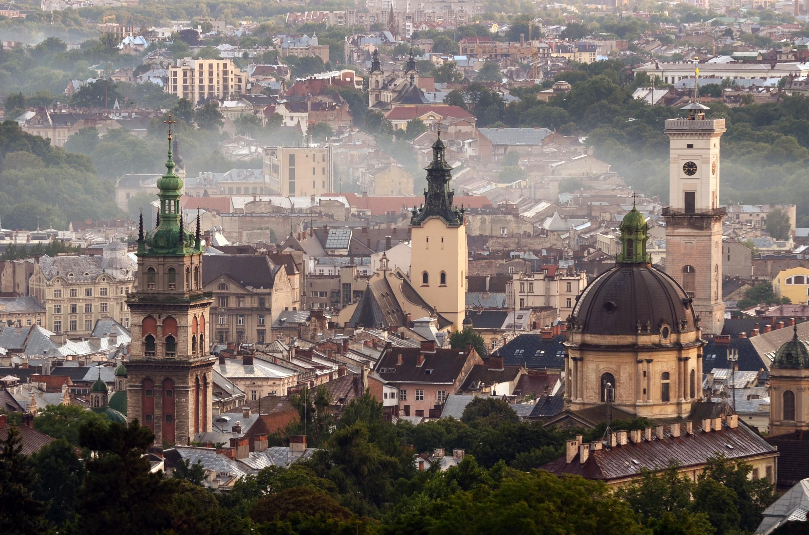

Львів — Перлина Заходу
Львів — місто з унікальною атмосферою, де історія зустрічається з сучасністю. Засноване у 1256 році, воно стало культурним і науковим центром, зберігаючи сліди різних епох та національностей.
Архітектура старого міста включена до списку ЮНЕСКО. Площа Ринок, Домініканський собор, Високий замок, вузькі бруковані вулички — усе це створює неповторну атмосферу, що приваблює мандрівників з усього світу.
Львів також відомий своєю кавовою культурою: саме тут народилась ідея "львівської кав’ярні", а численні фестивалі, зокрема "Свято сиру і вина", додають місту гастрономічного шарму.
Джерело: Вікіпедія← Повернутися на головну